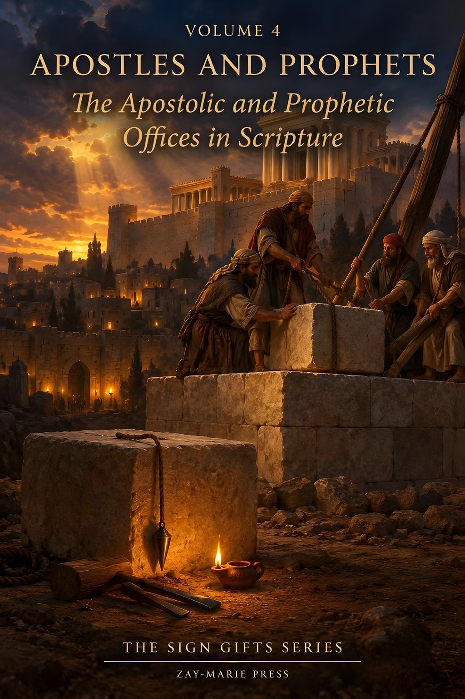
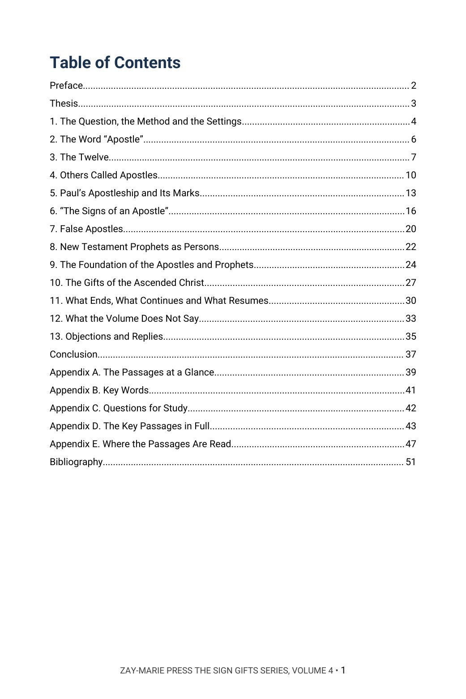
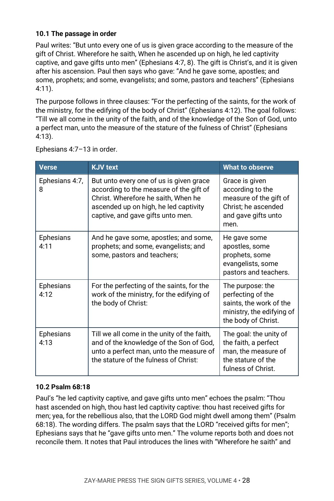
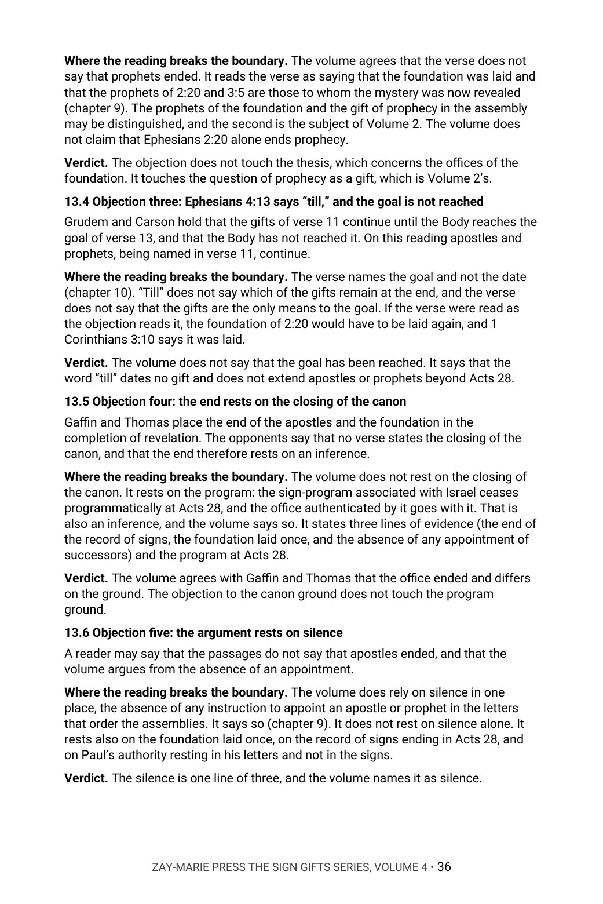

Apostles and Prophets
The Apostolic and Prophetic Offices in Scripture
What do the passages mean by “apostle” and “prophet,” and does any verse say that the offices continue?
The New Testament names apostles and prophets, lists them first among the gifts God has set in the church, and says the household of God is “built upon the foundation of the apostles and prophets.” Yet the word “apostle” is used of the Twelve, of Paul, of Barnabas and of Epaphroditus, and the word “prophet” is used of Agabus, of the daughters of Philip and of a poet of Crete. What does each passage mean, and to whom does it speak?
It argues that “apostle” names three kinds of person, that the Twelve’s office is suspended with Israel’s program at Acts 28 and resumes in the Kingdom, that the apostolic office as a sign-authenticated witness ends with the sign-program while Paul’s authority continues in his letters, and that the prophets of Ephesians 2:20 and 3:5 are prophets of the Mystery. It states plainly that no verse names a successor and makes no statement about God’s power. In Chapter 13 it sets its reading beside modern writers on both sides and rules on each objection.
New to the framework? The Digital Studies teach the distinctions this volume relies on. Start with the Digital Studies →
A Commentary That Argues a Position
This volume does not list the views held on apostles and prophets and leave the choice to the reader. It says what the author believes the passages state: what the word “apostle” means in each place, who the Twelve were and what became of their office, what Paul’s apostleship rests on, who the prophets of Ephesians are, and what the foundation is. It gives the evidence from the passages and rules on the strongest objections by name.
It is the fourth and last volume of The Sign Gifts Series, each volume of which is built around one narrower question about the signs of Scripture. Volume 1 asks what signs were for and where the record of them ends, Volume 2 asks what tongues and prophecy are, and Volume 3 asks what healing is for; this volume asks what the offices of apostle and prophet are and whether they continue. It is a different kind of book from the Digital Studies, which report what a passage says. Scripture is quoted from the King James Version throughout, checked word for word, and the writers named in Chapter 13 are described from their published works and are not quoted.
Related Reading
Digital Studies
Study 18 — Peter and Paul: Distinct Apostolic Commissions Reads the two commissions as the passages state them; this volume asks what an apostle is and whether the office continues.
Study 14 — Acts 9 and the Beginning of Mystery Reads Acts 9 and the beginning of the Mystery; this volume reads Paul’s apostleship and the signs of an apostle.
Study 36 — Jews, Gentiles, and the Church of God Reads the identity of Jew, Gentile and the church; this volume reads the foundation of Ephesians 2:20.
Bible Book Companion Series
Bible Book Companion — Ephesians Interprets the book of Ephesians through its key passages.
Bible Book Companion — Galatians Interprets the book of Galatians through its key passages.
Bible Book Companion — 2 Corinthians Interprets the book of 2 Corinthians through its key passages.
Commentary Series
The Sign Gifts Series, Volume 1 — The Sign Gifts Argues what signs were for, to whom and that the record ends in Acts 28; this volume takes the offices that stood with the signs.
Acts Commentary Series, Volume 3 — Paul Called and Sent Argues Paul’s call and sending in Acts 9, 13, 22 and 26; this volume reads his apostleship and its marks.
Pauline Doctrine Series, Volume 4 — The Assembly in Order Argues the order of the assembly and the gift lists; this volume argues the offices of apostle and prophet.
From the Word “Apostle” to the Foundation
The Words
Trace “apostle,” “apostolos,” “messenger” and “prophet,” and mark where one Greek word stands behind two English renderings.
The Twelve
Read the choosing, the sending and the promised thrones in Matthew, Luke and Acts 1, recording who is chosen, by whom and to whom.
Others Called Apostles
Follow Barnabas, Epaphroditus, Andronicus and Junia through their passages, marking what each says and leaves unsaid.
Paul’s Apostleship
Read Galatians 1 and 2, 1 Corinthians 9 and 15, and 2 Corinthians 11 and 12 in order, noting the marks Paul himself gives.
The Prophets of Ephesians
Read Ephesians 2:19–22 and 3:1–13 together, tracing who the prophets are by the passage’s own markers.
The Gifts and Their Limits
Read Ephesians 4:7–16, then weigh modern writers on both sides of the question and the ruling on each.
Read the Word in Its Context
Luke 6:13
“And when it was day, he called unto him his disciples: and of them he chose twelve, whom also he named apostles;”
Acts 14:14
“Which when the apostles, Barnabas and Paul, heard of, they rent their clothes, and ran in among the people, crying out,”
1 Corinthians 9:1
“Am I not an apostle? am I not free? have I not seen Jesus Christ our Lord? are not ye my work in the Lord?”
Galatians 1:1
“Paul, an apostle, (not of men, neither by man, but by Jesus Christ, and God the Father, who raised him from the dead;)”
2 Corinthians 12:12
“Truly the signs of an apostle were wrought among you in all patience, in signs, and wonders, and mighty deeds.”
Ephesians 2:20
“And are built upon the foundation of the apostles and prophets, Jesus Christ himself being the chief corner stone;”
Ephesians 3:5
“Which in other ages was not made known unto the sons of men, as it is now revealed unto his holy apostles and prophets by the Spirit;”
Ephesians 4:11
“And he gave some, apostles; and some, prophets; and some, evangelists; and some, pastors and teachers;”
What This Book Sets Out to Do
No verse names a successor to an apostle or to a prophet.
The volume reads the word “apostle” where it stands in each passage, and the foundation of Ephesians 2:20 beside Ephesians 3:5, before it says what the offices were or whether they continue.
Preview the Volume Before You Purchase
Click any page to enlarge it for reading.


Table of Contents
See the full order of the argument, from the Preface to the Bibliography.



The Argument at Work
See the method: Ephesians 4:7–13 read in order, with the KJV text set beside what each verse states.


Objections and Replies
See modern writers named on both sides, each position stated, and the ruling on each objection.
A Full Commentary on Apostles and Prophets
52-Page Digital PDF
Cover and a fully numbered interior.
Thirteen Chapters
From the question and the word “apostle” to the foundation of Ephesians 2:20 and the objections and replies.
Objections and Replies
Modern writers named on both sides, each objection ruled on from the text.
Passage by Passage
Matthew 10, Acts 1, Galatians 1 and 2, 1 Corinthians 9 and 15, 2 Corinthians 11 and 12 and Ephesians 2 to 4 read in order, with what each leaves unsaid.
Comparison Tables
The passages set side by side, with the KJV text and what to observe.
Conclusion
The position restated in full, with a closing table.
Five Appendices
The passages at a glance, key words, questions for study, the key passages in full and a verse-by-verse index of where the passages are read.
Bibliography
Every work cited, listed by author and title.
Apostles and Prophets
52-page digital PDF · For personal use